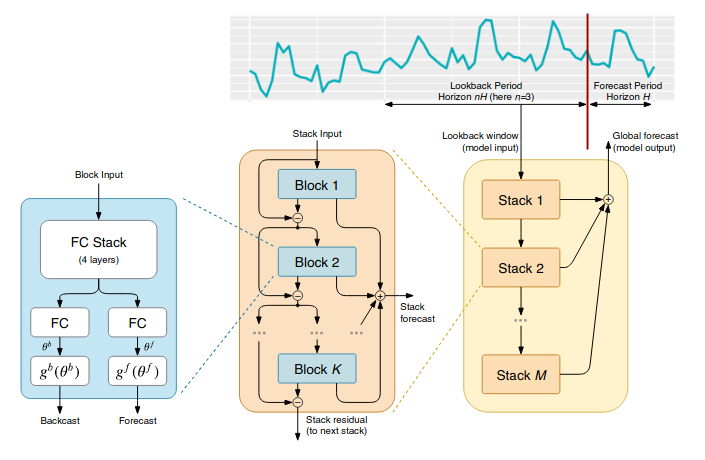
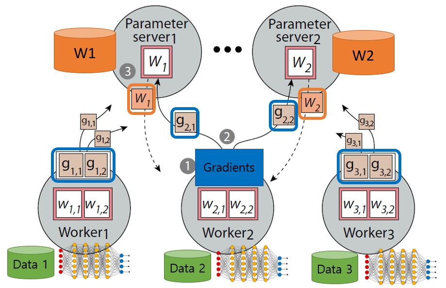
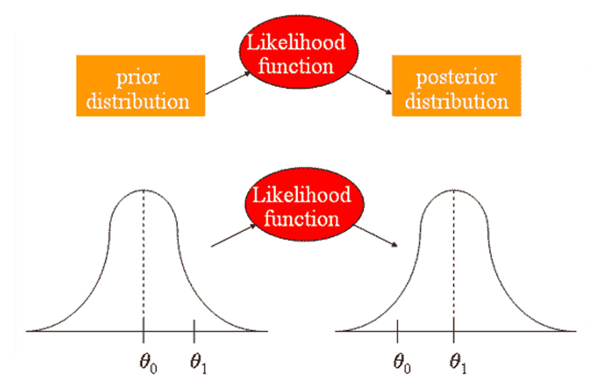

Research & Development of a decentralized machine learning infrastructure that utilizes on-device
machine learning, blockchain, and federated learning technologies to unlock the potential of
unused data and idle processing power for machine learning tasks.

Explored classical and modern time series forecasting models, including ARIMA, SARIMA, linear
regression, and deep learning models such as RNNs, N-BEATS, and transformer-based models.
Global models such as NBEATS, RNN, etc outperform statistical methods due to their ability to
provide robust forecasts.

Developed an algorithm for assessing driver behavior and predicting accident probability in a
Driver Behavior Assessment project using Applied Bayesian statistical methods.
Developed a driver report card system that provided an overall score based on various driving
behaviors and characteristics.

Utilized Machine Learning models to predict customer churn and retention for a Telecom company,
analyzing the results to optimize marketing and strategy policies.

Explored Kaggle Competition to gain an understanding of Natural Language Processing. Faced
challenges about getting good results due to the imbalanced nature of datasets.

Utilized various digital signal processing techniques, such as filtering, thresholding, and
Fourier analysis, to extract the fundamental frequency and harmonics of each note played on the
piano.